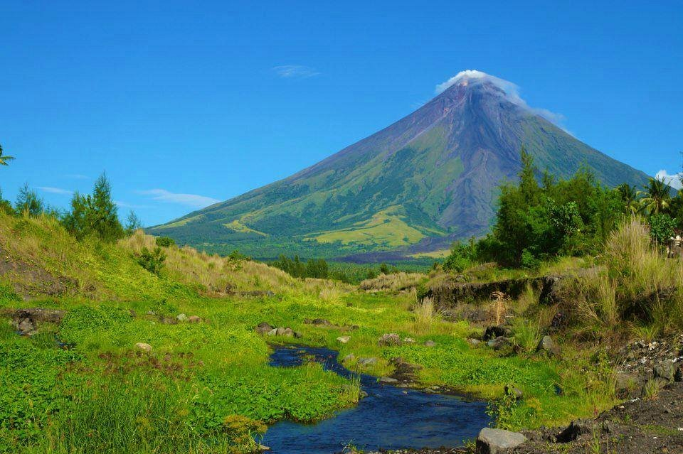
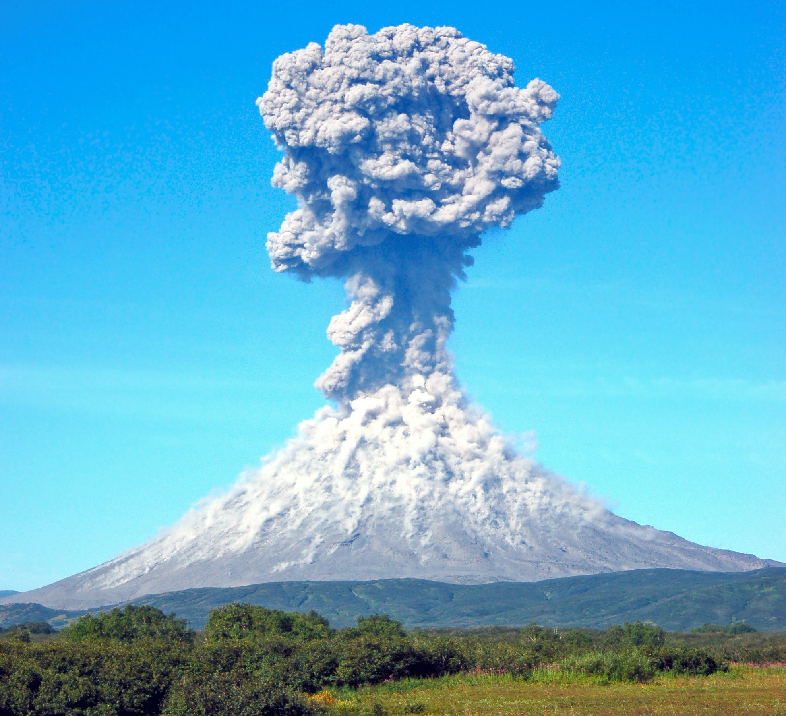
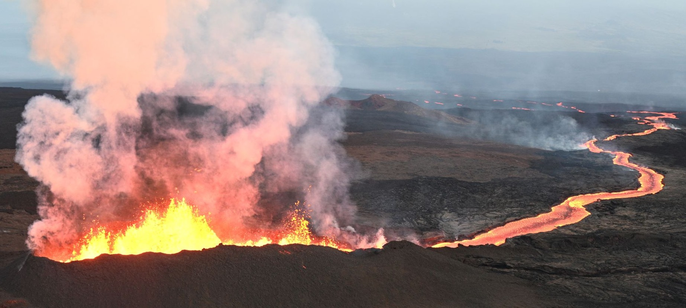
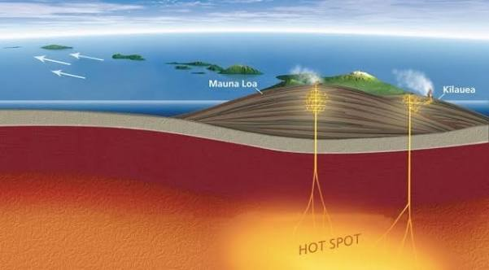

Onde estão Localizados
Os vulcões estão concentrados principalmente nas bordas das placas tectônicas (grandes blocos da crosta que flutuam sobre o manto). A localização deles divide-se em três zonas principais:
Círculo de Fogo do Pacífico: Uma faixa em formato de herradura ao redor do Oceano Pacífico que concentra cerca de 75% dos vulcões ativos do mundo. Abrange países como Japão, Indonésia, Filipinas, Chile e costa oeste dos Estados Unidos.
Zonas de Divergência (Dorsais Mesoatlânticas): Onde as placas tectônicas estão se afastando. O magma sobe para preencher a fenda, como ocorre no fundo do Oceano Atlântico e na Islândia.
Pontos Quentes (Hotspots): Locais no meio das placas tectônicas onde plumas quentes do manto sobem constantemente. Exemplo clássico: as ilhas do Havaí e o Parque Nacional de Yellowstone.

Partes Vulcânicas
-
Cone
é uma estrutura rochosa que dá forma ao vulcão. A maioria dos cones e dos domos vulcânicos são formados após a solidificação da lava expelida.
-
Cratera
é a abertura do vulcão, sendo através da cratera que a lava é expelida. Situa-se na parte mais elevada do cone vulcânico.
-
Chaminé
é o duto através do qual o magma se movimenta na estrutura vulcânica até atingir a sua abertura.
-
Câmara Magmática
é um volume de magma que fica localizado no interior da litosfera sob uma estrutura vulcânica. Na literatura, é chamado também de reservatório de magma.

-
Erupção
é o momento em que o vulcão libera para a superfície lava, gases, cinzas e outros materiais devido à pressão e ao movimento do magma..
-
Lava
é o magma que chega à superfície durante uma erupção. Ao entrar em contato com o ambiente externo, começa a esfriar e se solidificar.
-
Encosta
é a parte inclinada do vulcão, formada pelo acúmulo de lava, cinzas e outros materiais vulcânicos ao longo do tempo.
-
Manto
camada da Terra localizada entre a crosta e o núcleo. É uma região muito quente, onde existem materiais rochosos que podem contribuir para a formação do magma.

Movimento das Placas Tectônicas

A superfície da Terra não é uma única camada contínua. Ela é dividida em grandes placas rígidas, chamadas placas tectônicas, que fazem parte da litosfera e se movimentam sobre uma região mais quente e plástica do manto superior, chamada astenosfera.
Esse movimento acontece continuamente e é influenciado pelo calor interno da Terra e pelo movimento do material existente no manto. O material mais quente tende a subir, enquanto o mais frio e denso desce. Esses processos ajudam a movimentar as placas.
Apesar de parecerem paradas, as placas se movimentam alguns centímetros por ano, uma velocidade parecida com a do crescimento das unhas humanas.

Existem três principais tipos de movimentos entre as placas. No movimento divergente, as placas se afastam, permitindo que o magma suba e forme nova crosta. Esse processo acontece, por exemplo, nas dorsais meso-oceânicas.
No movimento convergente, as placas se aproximam e podem colidir. Quando uma placa oceânica encontra uma continental, a placa oceânica, que é mais densa, pode mergulhar por baixo da outra. Esse processo é chamado de subducção.
Já no movimento transformante, as placas deslizam horizontalmente uma ao lado da outra. O atrito entre elas pode provocar terremotos, mas esse tipo de limite normalmente não está associado à formação de vulcões.
Esses movimentos são responsáveis por vários fenômenos geológicos, como a formação de montanhas e oceanos, além de estarem relacionados à distribuição de muitos vulcões e terremotos do planeta, principalmente nas bordas das placas tectônicas.
Tipos de Vulcões

Estratovulcão ou Vulcão Composto
Possui formato geralmente alto, cônico e bastante inclinado. É formado por várias camadas de lava, cinzas e outros materiais vulcânicos. Pode apresentar erupções explosivas. Muitos dos vulcões mais conhecidos pertencem a esse tipo. Exemplos: Monte Fuji, Vesúvio e Monte Santa Helena.
Vulcão-Escudo
Tem aparência de um escudo deitado, com encostas suaves. É formado principalmente por lava muito fluida, que consegue percorrer grandes distâncias. Geralmente apresenta erupções menos explosivas e mais efusivas. Exemplo: Mauna Loa, no Havaí.


Cone de Escórias
Também chamado de cone de cinzas. É relativamente pequeno quando comparado a grandes vulcões. Forma-se pela acumulação de fragmentos vulcânicos ao redor da abertura. Normalmente apresenta formato cônico bem definido. Exemplo: Paricutín, no México.
Domos de Lava
Formam-se quando uma lava muito viscosa sai do vulcão e não consegue se espalhar muito. A lava vai se acumulando perto da abertura, criando uma estrutura arredondada ou em forma de cúpula. Podem estar associados a erupções explosivas. Exemplo: domo de lava do Monte Santa Helena.

Caldeiras Vulcânicas
São grandes depressões formadas quando uma parte do edifício vulcânico colapsa após uma grande erupção ou após o esvaziamento parcial de uma câmara magmática. Podem ser muito maiores que uma cratera comum. Algumas podem conter lagos. Exemplos: Yellowstone e Crater Lake.
OBS: Caldeira não é exatamente um "vulcão" no mesmo sentido que um estratovulcão ou vulcão-escudo. É uma estrutura vulcânica que pode resultar de grandes eventos eruptivos.

Vulcões Submarinos
Localizam-se abaixo da superfície dos oceanos ou mares. São muito comuns porque grande parte da atividade vulcânica da Terra ocorre no fundo dos oceanos. Podem formar novas áreas de crosta e, em determinadas condições, até contribuir para a formação de ilhas.


Vulcões pela Atividade
-
Vulcão Ativo
É aquele que está em erupção ou apresenta sinais de atividade vulcânica, como emissão de gases, terremotos vulcânicos ou movimentação de magma. "Ativo" não significa necessariamente que esteja entrando em erupção naquele momento.
-
Vulcão Dormente
É um vulcão que não está atualmente em erupção, mas que pode voltar a apresentar atividade no futuro. Também é chamado de vulcão adormecido.
-
Vulcão Extinto
É aquele para o qual os cientistas consideram que não há expectativa razoável de novas erupções, embora determinar isso com absoluta certeza possa ser difícil.

Vulcões em Erupção
Havaiano
Lava geralmente muito fluida. Erupções predominantemente efusivas. Pode produzir grandes fluxos de lava. Associado principalmente aos vulcões-escudo do Havaí.


Estromboliano
Erupções relativamente frequentes e geralmente moderadas. Produzem explosões que lançam fragmentos de lava e outros materiais. O nome vem do vulcão Stromboli, na Itália.
Vulcaniano
Erupções mais explosivas. Podem produzir grandes quantidades de cinzas e fragmentos vulcânicos. O nome vem do Vulcano, na Itália.


Pliniano
Erupções extremamente explosivas. Podem produzir enormes colunas de cinzas e gases que sobem muitos quilômetros na atmosfera. Podem gerar fluxos piroclásticos. O nome está relacionado a Plínio, o Jovem, que descreveu a erupção do Vesúvio em 79 d.C.
Surtseiano
Acontece quando o magma entra em contato com água, especialmente em ambientes marinhos rasos. A interação entre magma e água pode produzir explosões e grandes quantidades de fragmentos vulcânicos. O nome vem da ilha de Surtsey, na Islândia.


Freatomagmática
Ocorre quando magma e água interagem diretamente, produzindo explosões. Pode acontecer tanto em ambientes submarinos quanto em áreas continentais. Pode gerar grandes quantidades de cinzas e fragmentos vulcânicos.
Freatico
É uma explosão causada principalmente pelo aquecimento e expansão rápida da água, sem que necessariamente haja magma novo chegando à superfície. Pode ocorrer quando água subterrânea entra em contato com rochas muito quentes.

Vulcões em limites Divirgentes e Convergentes
Convergentes
Nos limites convergentes, duas placas tectônicas se aproximam e podem entrar em colisão. Quando uma placa oceânica mergulha sob outra placa, ocorre a subducção. Durante esse processo, a placa que desce libera água e outros materiais, o que facilita a formação de magma no manto. Esse magma pode subir até a superfície e formar vulcões. É o que acontece em regiões como o Japão, as Filipinas, os Andes e as Cascades. As erupções nesses locais costumam ser mais explosivas porque o magma geralmente possui maior quantidade de sílica e gases, tornando-o mais viscoso.

Divergentes
Nos limites divergentes acontece o contrário: as placas se afastam e o espaço criado permite que o magma suba. Esse material forma nova crosta, principalmente no fundo dos oceanos. Esse processo é muito comum nas dorsais oceânicas, onde a lava basáltica forma vulcões submarinos. Também pode acontecer em áreas continentais, como no Vale do Rift Africano. A Islândia e os Açores são exemplos interessantes porque estão em regiões onde a dorsal mesoatlântica chega à superfície. De forma geral, enquanto o vulcanismo associado à convergência costuma apresentar erupções mais explosivas, nos limites divergentes é mais comum encontrar lava basáltica fluida, que se espalha com maior facilidade.
Hotspots
Os hotspots, ou pontos quentes, são regiões onde existe uma intensa atividade vulcânica mesmo estando longe das bordas das placas tectônicas. Eles estão relacionados às chamadas plumas do manto, que são regiões onde material muito quente do interior da Terra sobe em direção à superfície. Quando esse material chega próximo à base da litosfera, pode provocar o derretimento de rochas e formar magma. Como as placas tectônicas continuam se movimentando sobre essas regiões, ao longo de milhões de anos podem surgir cadeias de vulcões. O vulcão mais novo geralmente fica próximo ao hotspot atual, enquanto os mais antigos ficam mais distantes e normalmente já estão inativos.

Um dos exemplos mais conhecidos é o Havaí. A Placa do Pacífico se movimenta sobre um hotspot, formando a cadeia de vulcões conhecida como Hawaiian-Emperor. Outros exemplos de hotspots são Yellowstone, nos Estados Unidos, as Ilhas Galápagos, a Reunião e Fernando de Noronha. A Islândia também possui uma relação com um hotspot, além de estar localizada em uma região de limite divergente. Nos oceanos, a crosta mais fina facilita a formação de vulcões com magma basáltico e geralmente mais fluido. Já nos continentes, o magma pode interagir com a crosta continental, podendo produzir erupções mais explosivas.
